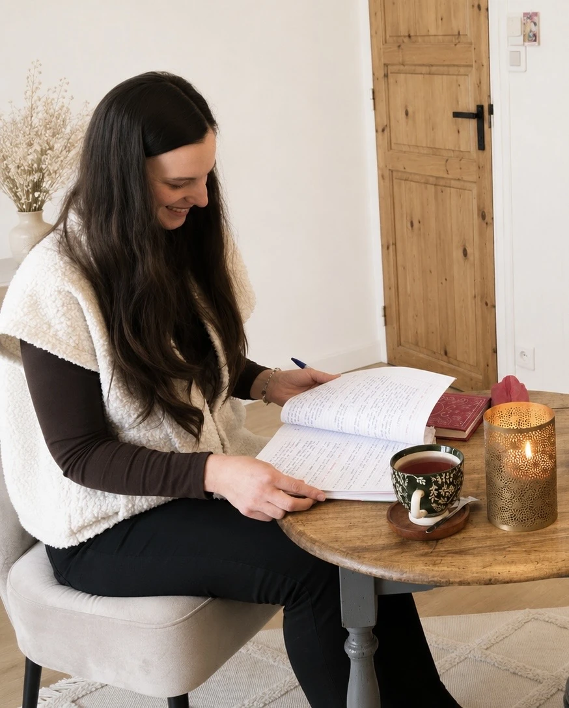

J’accompagne les femmes à revenir vers elles, à retrouver davantage de sécurité intérieure et à donner une forme visible à ce qui compte pour elles.

MON PARCOURS
Revenir à soi, un chemin que je connais.
Pendant longtemps, j’ai cherché à comprendre mon histoire, qui j’étais et ce que je faisais ici-bas.
J’ai cherché des réponses à travers la spiritualité. Je me suis souvent perdue et j’ai ouvert certaines portes qui auraient pu me mettre en danger. Jusqu’à ce que la vie m’amène à comprendre que j’aurais beau développer ma médiumnité, me relier à l’invisible et me connecter à mon âme, si je me sentais en insécurité à l’intérieur, rien ne pouvait véritablement se construire.
La vie et l’expérience m’ont montré que la sécurité intérieure n’est pas innée. Elle se construit, un pas après l’autre, au fil des expériences que nous traversons. Et il n’y a pas d’âge pour commencer.
C’est en revenant dans mon corps, en retrouvant ma présence et en restant reliée à mon cœur que j’apprends à faire des choix différents. Non sans peur, avec la peur.
MES EXPÉRIENCES
Deux univers, un même fil rouge.
Mon parcours professionnel m’a menée de l’organisation à l’accompagnement, puis à la création d’univers digitaux.
Écouter et accompagner
J’ai proposé des soins énergétiques, des massages pour femmes et des séances de communication intuitive pour les femmes et les enfants. J’étais dans une posture d’écoute, attentive à ce qui se jouait dans leur histoire et à ce qui demandait à être entendu.
Structurer et donner forme
Après trois ans comme assistante de gestion en entreprise, j’ai accompagné des professionnelles comme assistante digitale et créatrice de contenu sur les réseaux sociaux. J’ai découvert combien il pouvait être difficile de parler de soi et de rendre son message visible.
AUJOURD’HUI
Relier l’intérieur et l’extérieur.
Lorsque j’ai créé le site internet d’une amie, j’ai compris que mes deux univers pouvaient se rejoindre. J’ai choisi d’allier mes compétences dans l’accompagnement et dans l’identité digitale pour aider les femmes à revenir à ce qui compte pour elles, à clarifier leur message et à lui donner une forme visible.
Pour moi, ces deux dimensions sont profondément liées. Ce que nous vivons intérieurement influence notre manière de prendre notre place, de faire des choix et de développer notre activité professionnelle.
Aujourd’hui, c’est avec une grande joie que je te guide à ton tour pour écouter ta voix, celle de ton cœur, et créer les fondations qui te permettront de prendre ton envol.